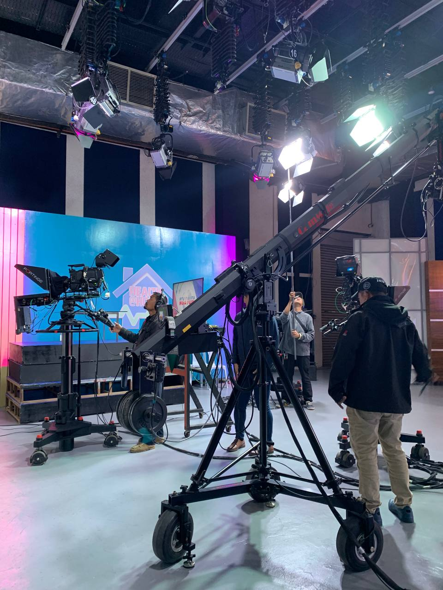

Our Future
A publication that grows with its community — expanding its coverage, its contributors, and its reach, while staying rooted in editorial integrity.
Stories That Inform. Voices That Matter.
"We envision Mulat Media as a trusted and student-driven multimedia network where every students are informed, heard, and encouraged to participate in the conversations that affect their school and society."
We envision a well-informed and engaged community where every voice is heard and valued. We aim to inspire individuals to develop critical thinking, embrace challenges, and practice responsible citizenship and democracy. We strive to become a dynamic multimedia news network that bridges campus and national conversations through digital storytelling, livestreams, and innovative platforms. We want to build a community where students do not simply scroll past information but take the time to understand it, question it, and discuss it responsibly. We hope to connect campus stories with wider conversations about Filipino youth, education, technology, culture, and everyday community life.
Most importantly, we envision Mulat Media as a place where a student can say, “My story matters, my questions matter, and my voice can contribute something to my community.”
A publication that grows with its community — expanding its coverage, its contributors, and its reach, while staying rooted in editorial integrity.
To become a training ground for the next generation of journalists, designers, and storytellers who lead with honesty and craft.
Stories that don't just inform readers, but move them to think more critically and engage more fully with the world around them.

MULAT MEDIA is designed to outgrow any single team or season. Every editorial process, every piece of member documentation, and every published issue is built with the next contributor in mind.
As our organization matures, our vision stays constant: to inform with clarity, to represent with fairness, and to give every voice within MULAT MEDIA a platform worth reading.
Read Our Mission →